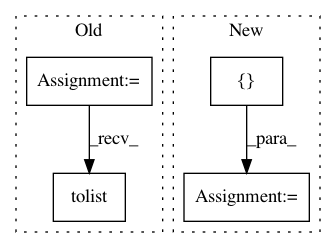

410992318552115d2e3de84844bf523012e3e98e,thumt/utils/hooks.py,,_evaluate,#,133
Before Change
with graph.as_default():
features = input_fn()
refs = features["references"]
placeholders = {
"source": tf.placeholder(tf.int32, [None, None], "source"),
"source_length": tf.placeholder(tf.int32, [None], "source_length")
}
predictions = eval_fn(placeholders)
predictions = predictions[0][:, 0, :]
all_refs = [[] for _ in range(len(refs))]
all_outputs = []
sess_creator = tf.train.ChiefSessionCreator(
checkpoint_dir=path,
config=config
)
with tf.train.MonitoredSession(session_creator=sess_creator) as sess:
while not sess.should_stop():
feats = sess.run(features)
outputs = sess.run(predictions, feed_dict={
placeholders["source"]: feats["source"],
placeholders["source_length"]: feats["source_length"]
})
// shape: [batch, len]
outputs = outputs.tolist()
// shape: ([batch, len], ..., [batch, len])
references = [item.tolist() for item in feats["references"]]
all_outputs.extend(outputs)
After Change
with graph.as_default():
features = input_fn()
refs = features["references"]
placeholders = []
for i in range(len(device_list)):
placeholders.append({
"source": tf.placeholder(tf.int32, [None, None],
"source_%d" % i),
"source_length": tf.placeholder(tf.int32, [None],
"source_length_%d" % i)
})
predictions = parallel.data_parallelism(
device_list, eval_fn, placeholders)
predictions = [pred[0][:, 0, :] for pred in predictions]
all_refs = [[] for _ in range(len(refs))]
all_outputs = []
sess_creator = tf.train.ChiefSessionCreator(
checkpoint_dir=path,
config=config
)
with tf.train.MonitoredSession(session_creator=sess_creator) as sess:
while not sess.should_stop():
feats = sess.run(features)
inp_feats = {
"source": feats["source"],
"source_length": feats["source_length"]
}
op, feed_dict = _shard_features(inp_feats, placeholders,
predictions)
// A list of numpy array with shape: [batch, len]
outputs = sess.run(op, feed_dict=feed_dict)
for shard in outputs:
In pattern: SUPERPATTERN
Frequency: 3
Non-data size: 4
Instances
Project Name: THUNLP-MT/THUMT
Commit Name: 410992318552115d2e3de84844bf523012e3e98e
Time: 2019-11-26
Author: cg847519328@163.com
File Name: thumt/utils/hooks.py
Class Name:
Method Name: _evaluate
Project Name: scikit-optimize/scikit-optimize
Commit Name: b18e95863def3c4b60b248503e78c95e97675b38
Time: 2016-08-18
Author: manojkumarsivaraj334@gmail.com
File Name: skopt/tests/test_forest_opt.py
Class Name:
Method Name: test_tree_based_minimize
Project Name: philipperemy/keras-tcn
Commit Name: 0cfe82c6beb9a28a5ff7da81b86fa0e93c388f14
Time: 2019-11-20
Author: premy@cogent.co.jp
File Name: tasks/save_reload_model.py
Class Name:
Method Name: